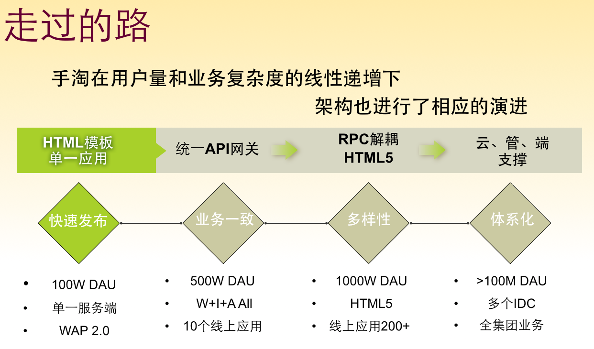
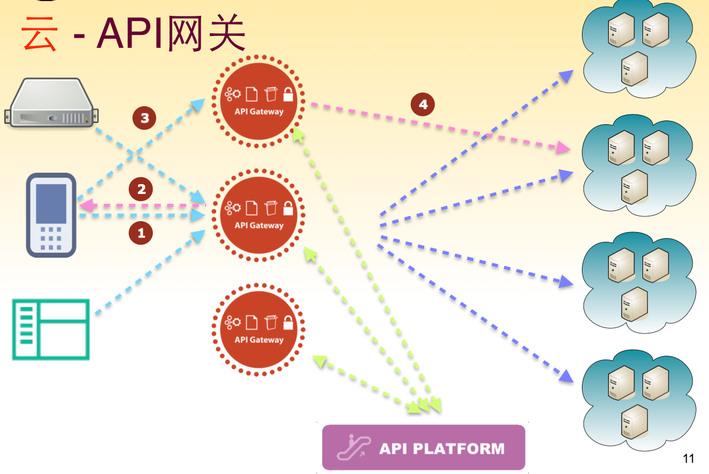
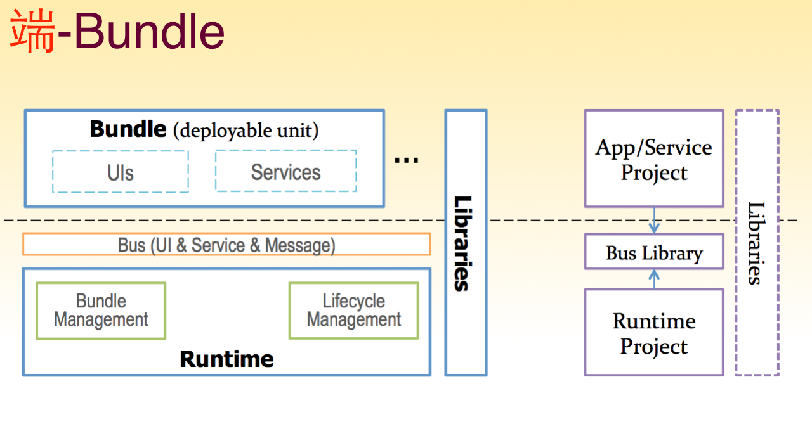
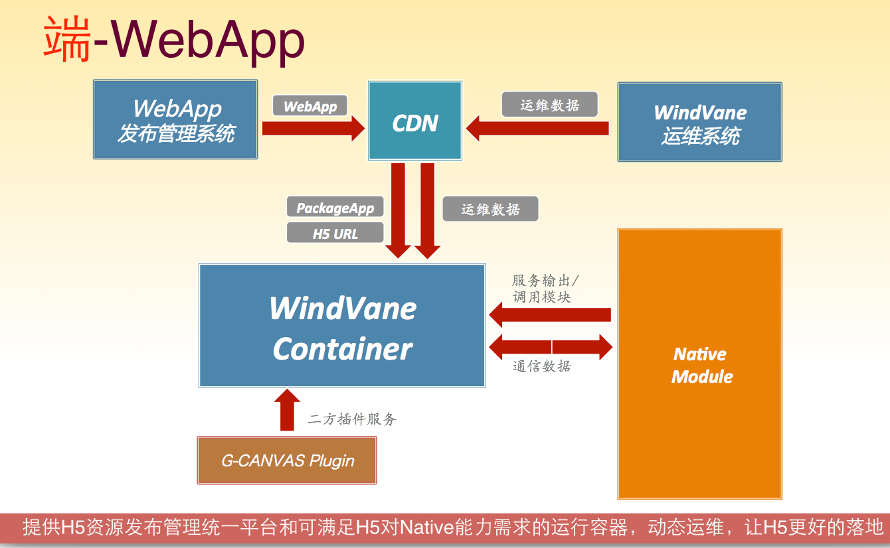
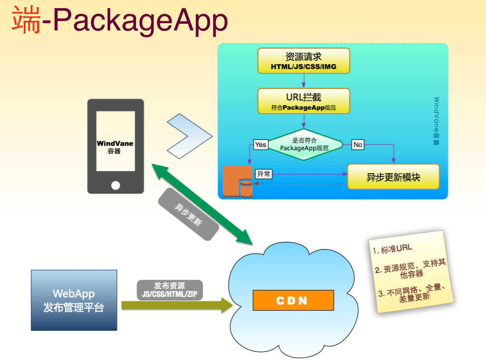
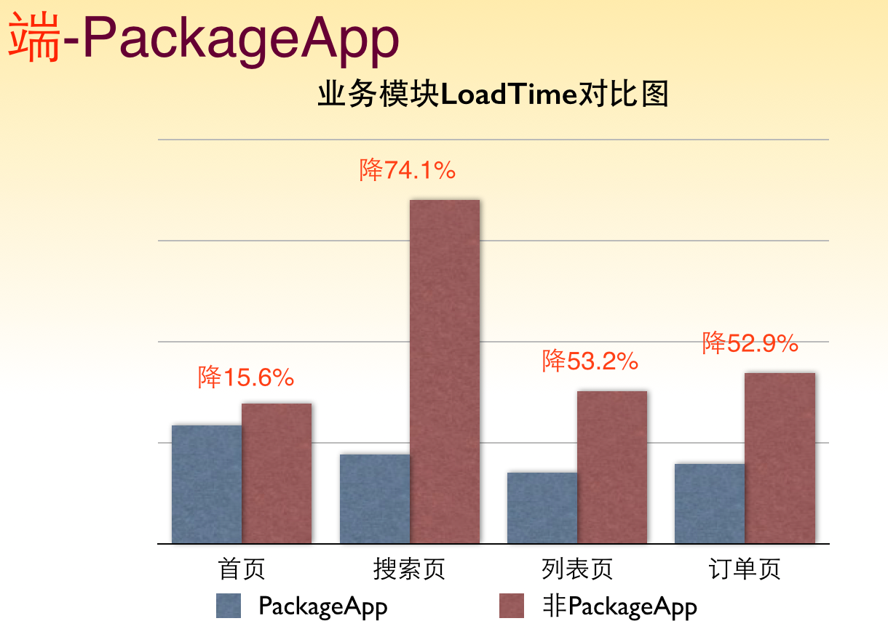

.jpg)

手机淘宝构架演化实践
2014年12月19日~20日，ArchSummit北京2014大会顺利举行。“移动互联网，随时随地”是非常火爆的一个专题。阿里无线事业部技术负责人庄卓然（花名南天）任出品人。来自阿里无线事业部的高级专家李敏（花名心石，微博：@allblue_华丽地低调 ）分享了《手机淘宝架构演化实践》（幻灯片下载）。
李敏主要负责淘宝无线客户端和无线网站基础服务、购物主链路的架构、研发方面的工作。从09年开始参与手机淘宝研发团队的组建和线上产品研发，先后负责过无线部门的社区、会员、营销、交易等多条产品线的技术工作，构建和发展了阿里无线技术体系中包括交易链路、百亿级别高性能API网关、WebApp平台等多个重要技术产品，经历和见证了阿里巴巴无线从开始之初到成为日活上亿级别电商应用技术变迁和积累。
本文即根据李敏的演讲整理而成。
发展阶段
从2009年开始，DAU从100万增长到超过1亿，面临的问题、包括研发支撑所需要解决的事情各不相同。在用户量和业务复杂度的线性递增下，架构也进行了相应的演进。如下图所示，具体可以分为四个阶段：

- 第一阶段，手淘的前身WAP网站，业务初立、变化快，需要快速发布，采取HTML模板和单一应用，最大程度满足快速发布和修改的需要；甚至不需要改动后端的业务代码，在前面的模板上做一些修改就可以了。
- 第二阶段，DAU的快速增长，WAP/Android/iOS多个平台的业务起来了，需要在多个平台上进行快速的业务复制和业务管控，统一API网关出现。
- 第三阶段，DAU进一步增长，线上系统越来越多，业务的多样性需求更多的体现出来，基于HTML5的一整套解决方案上线，更多的HTML5和Native混合的业务形态，API网关进行进一步优化和扩展，更方便的接入方式。
- 第四阶段，当DAU达到100M的时候，全集团的业务都需要在手淘透出，API网关被部署到更多的IDC机房，如何更有体系化的进行有效的研发、接入更多业务、并进行更有效的业务监控，需要更加体系化的架构治理。
API网关
做WAP的时候没有所谓的API网关，为什么要用API网关呢？
随着应用数量的增多，每个应用分别暴露的API出口很多，修改的话逻辑很复杂，这时候应该引入一个统一的网关。
但随着DAU的增长，API网关会成为一个单点。开发团队在中间做了很多技术和架构上的努力，主要有几个关键点。一是后端接入很多应用，其实API网关只是通路，理论上不存在调用的上限，只要内存够大，包括网卡的流量够的话都可以上来。二是有必要的机制做到宽阔的调用网关。还有一点，当后端业务要经过API网关时，其实现在业界很多都是典型的RPC的模式，RPC的模式有一个绕不开的问题，就是可能要设定一些东西，这时后端服务跟API会有一定程度上的耦合。现阶段要接入服务，后端服务器随时都会变化，不可能后端服务变化的时候都对API做相应的发布，这是不现实的。所以有一套自己的RPC机制，解除了这种强类型的约束。
此外，可以在网关上附加很多功能，比如安全、审计，还有一些日志、审查等。
到了现在这个阶段，要进行异地部署，很多IDC，这样的话引入API网关很可能会带来问题。包括今年的双11或者是双12，要在多个异地机房支撑手机淘宝的业务，会有很多API网关。

比如说像APP可以在中心网关上面询问，应该去哪个真正的API网关。然后中心API网关会告诉它结果，它再连接到所在地的API网关上，然后再向后端API发起调用，所有API的服务网关都受管控中心统一管控。比如说增加一些新的功能，上线一些新的API，包括一些引流、切换，这些指令都会在管理平台上向各个API网关发送。
手机端
1.Bundle
去年下半年，开发团队对整个手机淘宝的架构做了比较大的调整，如下图所示，左侧是运行时的架构分布，右侧是工程代码级别的分布。在运行的时候，其他的业务团队提供的都是一个个的业务Bundle，这是可部署的单元，包括UI、服务和标准中间件的调用代码，下面有一个总线程，负责管理和开发好统一的UI服务，包括消息服务的总线。再下面是运行容器，上面跑的的是所有的Bundle的东西，对应运行时的东西，右侧是真正在开发时候的结构。比如说聚划算，它要开发它的业务，就做一个单独的工程，然后去开发；它只用开发自己的，开发到差不多的时候，就将其代码打成一个Bundle提供过来，然后一起打包发出去。

2.WebApp
下图是现在手机淘宝上关于HTML5的整体框架图。手机淘宝上的方案大致分为两部分，中间那一部分是手机淘宝自己开发的HTML5的运行容器，它负责在上面跑各种各样的WebApp，在线上有一个统一发布管理系统，它可能对性能进行检测，包括CDN是否符合规格，HTML本身有没有异常等情况，经过这些必要的检测，包括审查之后，它统一发到CDN上。容器本身其实也会接受运行时的信息，容器接收到这两边的指令之后，它自己会做一些更新配置，也可能会装载运行，从线上系统下发新的WebApp。此外，还可以运行WebApp或者是做URL的导航拦截，甚至做一些交互。

3.PackageApp
这是今年新的建设，整个系统是基于前面整个体系来做的，称之为PackageApp。

这个跟前面最大的区别就是让用户感知不到前面同步下载的过程，大概的做法是：把HTML5以及WebApp在发版之前先做一些预知放到客户端里面，前面会做两件事情，首先按照原来的逻辑运行，其次就是在右侧的蓝图里面，它会去做一些UI的拦截，发现用户点击的icon进去之后，整个URL是符合用户规范的，它会启动检测机制去检查线上是不是有新的版本需要下载，如果有的话会启动异步更新模块，从CDN上拉取新的WebApp版本，否则会走到原来的地方，最后既不影响用户去使用WebApp，又能把自己最新的版本更新到所期望的版本，这由统一的管理平台去发布。
在方案设计之初，还思考了三个方面，首先它是标准的URL，在点击进去之后是导航的URL，对于前端工程师来说，他设计研发WebApp跟客户端或者是线上跟HTML5的网站是一致的。其次，手机淘宝自己的容器，制定了自己的规范，在底层的容器上面可以实现手淘定义的规范。第三，“不同网络、全量、差量更新”，这点很重要，在移动互联网场景下，到底要发起几条链接拉取资源，在WIFI下怎么拉取资源，其实都是不一样的。在不同网络下面，对策都不太一样。
下面是采用PackageApp后业务模块LoadTime对比图：

支撑体系
除了前面介绍的内容，比较大的电商App，还需要一个很完备的支撑体系。如果没有的话，在线上运行的情况是不可感知的。手淘在不同的维度也做了很多支撑的工具。
1.研发支撑
在研发支撑上面，像传统的Reivew代码，特别是做客户端的同学几乎都会做统一的UI库，大家会设计模板，比较典型的，会有所谓的日常预发、线上染色等等。它的集群数量跟能够进来的用户是很有限的，通过这个环境来确认所开发的代码发布到线上可能会有什么问题。一套代码经过预发之后再发布到线上去，最后有一个染色环境，比如说用户打电话反馈遇到的问题，比如说下单下不了或者是搜索无结果，这时会有一个染色集群，把用户定位到染色集群上面，对用户专门进行一些分析，现在还没有做到直接在用户机器上做调试，但是用户到了染色集群上面，整个调用的链路会剥离出来，比较好分析用户到底发生了什么事情。
2.测试支撑
App的测试很重要，除了比较常规的单元功能测试，还有很重要的像稳定性跟性能，以及自动化这些都是很重要的。像手机淘宝差不多是一个月左右的时间可能会迭代一个版本。比如说新的功能开发会不会影响到老的功能，智能化测试很重要，可能分成两部分，一部分是线上所有的API，包括业务逻辑是不是正常。另一部分是新写的代码会不会有问题，因为前面架设了统一的API网关，所以会在网关这个层面做很多自动化的调用回归，构造很多正常用户的数据去测试线上API系统的返回值，包括一些异常是不是正常，来保证线上业务逻辑的正常。在客户端这一侧，则会做很多自动脚本的回归，保障整个客户端新做的代码跟原来相比没有什么问题。另外还引入了比较多的静态代码扫描，保证不会出现低级问题。
3.运维支撑
移动App的运维支撑跟线上不太一样。除了常见的性能跟稳定性分析，还有针对App的业务监控跟舆情监控。舆情监控这个应该是移动App所特有的环节，大家通过市场去分发，很多用户会发评论，iOS特别明显，有人说好，有人说不好，安卓更复杂，特别是国内有大大小小非常多的应用市场，不一而足。所以怎么对舆情做一个有效的监控，既能通过舆情监控，快速收集问题，也能做一些梳理分析，找到产品或者是性能方面的提升点。
4.发布支撑
发布支撑，其实也是在大的App上面才会出现的，针对一个人群的发布。传统的直接是发到市场上，大家都收到了。而手淘现在有很多内部灰度和外部灰度正式发布，可能有一些内测版本只发给阿里巴巴集团内部员工，这可以通过自己做的发布系统来支撑，有比较灵活的发布策略调整：可以圈定一批用户，也可以选定一个区域，甚至可以用后台数据做合理的设置给特定的版本推送特定升级的版本。
如果App发到用户手上，结果发生了致命的问题，怎么办呢？其实有两种方法修复线上的问题，第一个是直接替换，另外就是更小维度的补丁，现在在安卓上做的比较多。
李敏还分享了一个案例，在上半年有一次大促的时候发生了一个问题，零点就要促销了，版本可能是前天刚发布给用户的，那怎么办呢？如果是替换的话也可以做到，但是下载数据量非常大，刚发布不久对用户影响比较大，所以选择了用补丁修复，主要是类似于替换，用JAVA开发的应该知道，主要是用类替换的方式做的。在iOS上也有一些方案，不过还在尝试当中。
客户端监控
可以在分钟级别确定用户调用某个操作的成功次数、失败次数和失败率，实现对业务可用性的监控。
舆情平台
舆情平台是移动App所独有的。要获取信息，会从用户手机淘宝自己填的反馈，利用市场和微博，实时抓取，然后把内容聚合起来，进行热门词归类，筛选出一些热门的标签话题做一些智能分类，分类之后大致知道到底是支付、详情、退款出现了什么问题，确定问题的重点之后，可以直接联系用户，甚至去跟踪用户，根据这些问题去修复线上的紧急问题或者是改善产品，这就是在线上实际使用的舆情平台。通过热门词的分类排名，就可以知道某一个版本在某一个阶段最重要的问题是什么，还扩展了用户集中反馈。
比如举办一个抢红包的活动，这个活动出现了什么问题，大量的用户重复反馈这个问题，就可以把热门的话题聚集起来。另外还可以通过舆情平台确定某个技术的改造是否成功。
舆情平台早期主要用于收集一些信息，后来发现把舆情收集起来做一些大数据分析，可以得出很多自动化的结论，甚至可以验证研发的结果是好是坏。
演讲的视频会在制作完成后发布到我们的网站上，敬请期待。

深度内容
如何打造移动端的个人资产管理APP
李治国 12月22日
.jpg)
豌豆荚研发的五个方面
丁吉昌 12月19日
度量和改进软件开发的工作效率
Ben Linders 12月19日

基于PXC的MySQL高可用架构探索
周彦伟 12月19日

架构的相似性是怎么来的？
王飓 12月18日


您好，朋友！
您需要 注册一个InfoQ账号 或者 登录 才能进行评论。在您完成注册后还需要进行一些设置。获得来自InfoQ的更多体验。
告诉我们您的想法